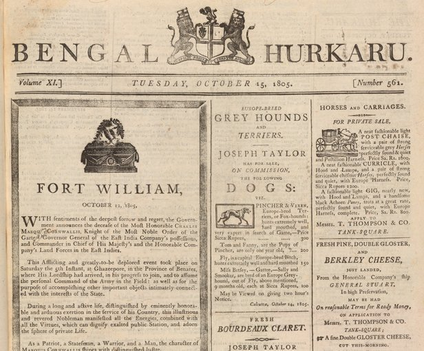
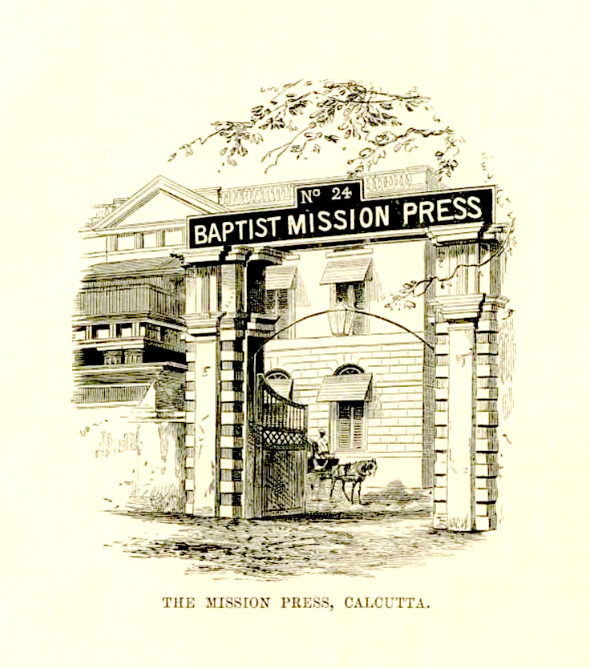
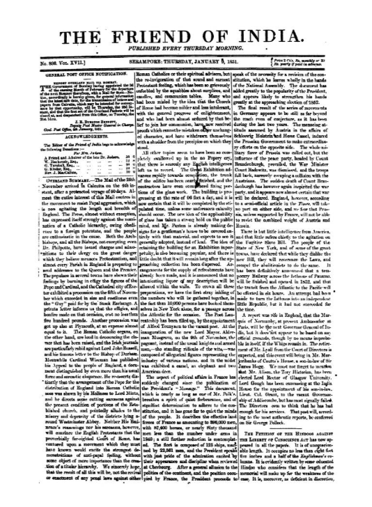
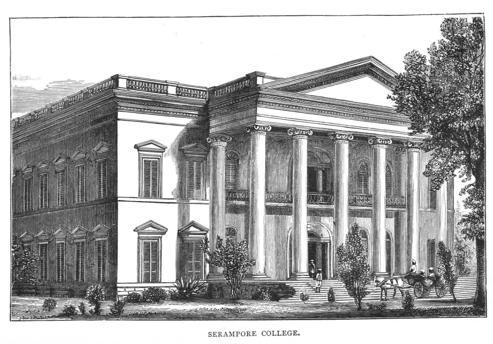

Two Kinds of Durability
The previous chapter measured Calcutta's earliest newspapers by how well they survived confrontation with the colonial administration, and found that caution and official patronage outlasted Hicky's confrontational independence. This chapter asks a related but different question: what actually made a Bengal press durable over the long run, not just safe from a libel suit, but capable of surviving founders' deaths, changes in ownership, and shifts in political weather across decades rather than years. Two institutions founded in this period answer that question in strikingly different ways.
The Bengal Hurkaru, launched in February 1795, answers it through sheer commercial adaptability, growing not by staying small and cautious but by actively absorbing its competitors, one after another, until it had swallowed nearly every rival English paper Calcutta had produced since Hicky. The Serampore Mission, arriving in Bengal in 1800, answers it through something almost the opposite of commercial hustle: institutional patience backed by religious conviction, a location deliberately chosen outside East India Company jurisdiction, and a willingness to measure success in decades and in books printed across dozens of languages, rather than in any single newspaper's circulation figures.
Both models matter for the same reason. Calcutta's press through the first decades of the nineteenth century was not a single, uniform institution slowly maturing along one path. It was several genuinely different kinds of printing operation, commercial, official, and missionary, running in parallel, each with its own logic for how to survive, and each contributing something different to the infrastructure that Bengali-language newspapers would eventually be built on.
It is worth being clear about the roughly twenty-year span this chapter covers, from the Hurkaru's 1795 founding through the Friend of India's 1818 launch, because it overlaps almost exactly with the period this Part's earlier chapters have already examined from other angles. The same two decades that saw the India Gazette and Calcutta Gazette consolidate their official standing also saw an entirely separate commercial press tradition mature at the Hurkaru, and an entirely separate missionary tradition take root at Serampore. These were not sequential developments, one replacing another. They were simultaneous, overlapping experiments in how a Bengal newspaper could be built to last.
The Bengal Hurkaru: Continuity After Hicky

The Bengal Hurkaru, Tuesday 15 October 1805, leading with news of Governor-General Lord Cornwallis's death at Ghazipur, a decade into the paper's run and still years before its long streak of absorbing rival papers began.
Fifteen years after Hicky's Bengal Gazette first appeared and thirteen years after its founder's ruin, Hugh Boyd launched the Bengal Hurkaru on 19 February 1795, as an English-language weekly serving much the same commercial and administrative audience that Hicky, the India Gazette, and the Calcutta Gazette had all competed for. By 1795, Calcutta's newspaper reading public had grown considerably since 1780, and the city could evidently support more than the two or three papers that had defined its first decade of print journalism.
The Hurkaru's early character sat somewhere between Hicky's independence and the India Gazette's official caution. It was not launched with explicit Company sanction the way the Calcutta Gazette had been, nor did it build its identity around confrontation with named officials the way Hicky's paper had. Its circulation drew heavily from the British military, merchant, and civil service communities in and around Calcutta, with a smaller but real readership among the city's Bengali community as well, a detail worth noting because it shows English-language Calcutta journalism reaching beyond a purely British audience well before Bengali-language papers themselves existed.
The paper's name is itself a small window into Calcutta's linguistic mixing at the time. Hurkaru derives from the Persian harkara, meaning messenger or courier, a term already in wide use across Mughal and Company administration for the runners who physically carried official correspondence between offices and cities. Naming an English-language newspaper after a Persian word for messenger captured something real about what the paper understood its job to be, and about the multilingual administrative culture it operated within, where Persian remained an important language of governance and record-keeping well into the Company period.
Little is recorded about Hugh Boyd himself beyond his role founding the paper, which is itself a useful contrast with Hicky. Where Hicky's personality, grievances, and courtroom battles are extensively documented because they generated the kind of dramatic public record that survives, Boyd's comparative obscurity reflects exactly the pattern the previous chapter identified: founders of durable, well-run institutions tend to leave thinner personal paper trails than founders of dramatic failures, precisely because their papers avoided the lawsuits, seizures, and public confrontations that generate detailed historical documentation in the first place.
A Persian Word for Messenger
It is worth dwelling a little longer on what the Hurkaru's readership tells us about Calcutta's press economy by the mid-1790s. A newspaper whose core audience was the British military, merchant, and civil establishment needed a very different mix of content than a paper trying to build a mass readership. Troop movements, promotions, ship arrivals and departures, auction notices, and commercial prices mattered enormously to this specific audience in a way they would not have mattered to, say, a general Bengali-language readership decades later. The Hurkaru built its early identity around serving this narrow but commercially valuable audience reliably, a strategy that shares more with the India Gazette's official caution than with Hicky's populist provocation, even without any formal government sanction behind it.
This is a useful corrective to any temptation to sort Calcutta's early newspapers into a simple binary of brave independent papers versus craven official ones. The Hurkaru occupied a third position: commercially independent, financially self-sustaining, editorially unremarkable by the standards of Hicky's confrontational style, and successful largely because it served a well-defined, loyal readership consistently over a very long period. Longevity, in Calcutta's earliest newspaper market, turned out to depend less on any single editorial stance and more on finding a durable audience and serving it reliably, whatever that audience happened to want.
Growing by Absorption
The clearest evidence of the Bengal Hurkaru's durability is not anything it printed, but the list of competitors it eventually swallowed. The paper absorbed the Scotsman in the East in 1825, then the Bengal Chronicle in 1827, an acquisition significant enough that the paper's name changed afterward to the Bengal Hurkaru and Chronicle. Then, in 1834, in a detail that closes a loop running all the way back to this history's fourth chapter, the Hurkaru absorbed the India Gazette itself, the very paper that had purchased Hicky's seized printing press at auction in 1782.
The press that had literally inherited Hicky's confiscated type in 1782 was itself absorbed by a rival newspaper fifty two years later, a reminder that no single model of early Calcutta journalism, independent, official, or purely commercial, proved permanently dominant on its own.On the India Gazette's 1834 absorption into the Bengal Hurkaru
By 1819, the Hurkaru had also grown from a weekly into a daily paper, publishing on 29 April of that year, a format shift that reflected both growing demand for more frequent news and growing confidence in the paper's ability to fill a daily publication schedule with enough material to justify the cost. A weekly newspaper is, in important respects, a fundamentally different institution from a daily one: it requires a larger, more organized editorial and printing operation, a steadier flow of advertising revenue, and a readership habituated to checking the news far more often than once a week. The Hurkaru's transition to daily publication marks one of the clearest signs in this whole period that Calcutta's English-language reading public, and the commercial infrastructure supporting it, had matured well past what existed in Hicky's day.
None of this growth required political confrontation or official patronage. It required, instead, the unglamorous business fundamentals that had eluded Hicky: reliable revenue, sound management, and enough institutional flexibility to absorb weaker competitors rather than simply outlasting them. It is a less dramatic story than Hicky's two-year war with Warren Hastings, but it is arguably the more representative story of how most of Calcutta's early English-language press actually survived and grew.
There is a broader pattern worth naming here, one that recurs throughout the history of newspaper industries well beyond colonial Calcutta: consolidation tends to favor whichever paper first achieves a durable base of loyal readers and reliable revenue, because that paper can then absorb weaker competitors on favorable terms whenever they falter, growing steadily stronger relative to the field with each acquisition. The Hurkaru's four-decade run of absorbing rivals, from 1825 through 1834, was not the product of any single brilliant strategic decision. It was the compounding effect of financial stability sustained over a long enough period that competitors, however individually well-intentioned, eventually ran into difficulties the Hurkaru itself had already learned to avoid.
Serampore: A Mission Outside Company Territory
William Carey, the English Baptist missionary who arrived in Bengal in 1793 and, finding the East India Company unwilling to permit missionary activity in its own territory, went on to found the Serampore Mission Press outside Company jurisdiction.
While the Hurkaru was building its commercial durability inside Calcutta, an entirely different kind of press was taking shape a short distance up the Hooghly, in the small Danish colonial settlement of Serampore, then also known as Fredericksnagar. The choice of location was not incidental. William Carey, the English Baptist missionary who had arrived in Bengal in 1793 hoping to preach and translate scripture into Indian languages, found the East India Company deeply unwilling to permit missionary activity within its own territories, worried, not without reason, that missionary provocation of religious sentiment could destabilize the delicate arrangements the Company depended on to govern.
Serampore, under Danish rather than British administration, offered Carey and his eventual colleagues, Joshua Marshman and William Ward, together remembered as the Serampore Trio, a legal and political space the Company could not directly control. This is the single most important fact explaining why the Serampore Mission Press became as durable as it did. It was insulated, by an accident of European colonial geography, from the same Company authority that had banned Hicky's paper from the post office and, later, would impose formal censorship on the entire Bengal press. A mission operating from Danish territory answered to different political pressures entirely, and that insulation gave its printing operation a stability that no Calcutta-based commercial or official paper, dependent in one way or another on Company goodwill, could fully replicate.
Carey's own account of how the press began is almost aggressively modest for an operation that would eventually publish across dozens of languages. He purchased a secondhand English printing press for forty pounds, sourced through an advertisement, hardly the stuff of an ambitious institutional launch. What Carey wanted specifically was to print the New Testament in Bengali, and to do that he needed Bengali type, ink, and paper, which he purchased from the type-cutting foundry of Panchanan Karmakar in Calcutta, the same craftsman who, working with Charles Wilkins, had cut Bengal's first movable Bengali type back in 1778, a detail this history's first chapter already flagged as a critical technical breakthrough. Serampore's press, in other words, did not invent Bengali printing. It inherited and then scaled up technology that already existed, applying missionary patience and institutional resources to a problem earlier printers had only begun to solve.
A Press in Forty-Five Languages

The Baptist Mission Press's later Calcutta premises at No. 24. As the mission's printing operation grew, it extended beyond Serampore itself into Calcutta, carrying the same translation and printing infrastructure into the colonial capital.
The Serampore Mission Press began operating on 10 January 1800, with William Ward taking the practical lead on the printing side of the operation while Carey focused on translation and Marshman on administration and education. Work moved quickly by the standards of any eighteenth or nineteenth century printing operation. The Gospel of Matthew, the first portion of the New Testament to be finished in Bengali type, was completed by August of that same year, representing the first full book ever printed using Bengali movable type, a milestone that gave concrete, physical proof that the technical breakthrough of 1778 could actually support sustained, large scale publishing rather than remaining a one-off demonstration.
What followed over the next three decades was an output scale that dwarfed every commercial and official press examined so far in this history combined. By 1832, the Serampore Mission Press had published roughly 212,000 books across 45 different languages, an extraordinary figure for any printing operation of the period, let alone one operating from a small settlement outside any major colonial capital. This output included scripture translations, grammars, dictionaries, and educational texts, produced not to turn a commercial profit in the way a newspaper needed to, but to serve the mission's religious and educational purposes across as much of South and Southeast Asia as its translators and printers could reach.
This scale of production required an institutional apparatus entirely unlike anything a commercial newspaper needed: not just printers and compositors, but translators fluent in dozens of Indian and Asian languages, type founders capable of casting new character sets for scripts far beyond Bengali and English, and a sustained flow of funding from missionary societies back in Britain willing to underwrite decades of work whose returns were measured in converts and readers reached, not profit margins. It is worth being clear-eyed about the mission's underlying purpose, which was religious conversion, a goal that sits uneasily with any simple narrative of print progress. But the printing infrastructure this purpose financed, the type foundries, the translation expertise, the sheer institutional habit of publishing at scale, became a foundation that Bengali print culture more broadly would draw on for decades afterward, regardless of what any individual reader made of the mission's religious aims.
Some of the Languages Serampore Printed In
Bengali came first, but the mission's translation work eventually reached across South and Southeast Asia. This is not an exhaustive list, the historical record documents these languages by name with confidence; the remainder of the 45-language total is attested in aggregate but not always itemized language by language.
The Chinese translation is notable on its own: Serampore produced a complete Bible in Chinese, printed for a readership thousands of miles from the mission's own base on the Hooghly.
The Friend of India, 1818

The Friend of India, published every Thursday morning from Serampore, in an issue from 9 January 1851, more than three decades after Marshman's original 1818 launch, and evidence of just how long the periodical's run actually lasted.
Eighteen years into the mission's printing operation, on 30 April 1818, Joshua Marshman launched the Friend of India, an English-language monthly periodical reviewing Indian affairs, publishing essays on social and religious questions, and pressing openly for reform. The very first issue tackled the practice of sati, the burning of widows on their husbands' funeral pyres, a subject that would become one of the defining social reform debates of the following decades, covered in detail in Part II of this history through Rammohan Roy's own campaigning press.
The Friend of India's willingness to engage directly with contentious social and religious questions marks a real departure from every English-language paper examined in this Part so far. Hicky's paper had criticized individual officials by name, a personal and political target. The India Gazette and Calcutta Gazette had studiously avoided controversy of any kind. The Bengal Hurkaru served its military and merchant readership without much interest in social reform crusades. The Friend of India, by contrast, treated reform advocacy as central to its mission from its very first issue, a natural extension of the Serampore Mission's broader religious and educational purposes into the register of a general-interest periodical.
The magazine's institutional backing gave it a staying power that matched its editorial ambition. Where Hicky's paper had folded within two years under the weight of a single sustained legal assault, the Friend of India, financially and institutionally supported by the wider Serampore Mission rather than dependent on its own subscription revenue alone, continued publishing for decades, with some accounts tracing its lineage forward as far as 1875, extending across an entire era of Bengali press history that this account will return to repeatedly in later chapters.
It is worth noting the editorial courage this represented, even accounting for the mission's institutional protection. Sati was not a marginal or safely academic topic in 1818. It sat at the center of an intense, ongoing debate between reformers and traditionalists that would consume much of Bengal's English and Bengali-language press over the following decade, covered in detail through Rammohan Roy's own campaigning journalism in Part II. The Friend of India's decision to open with this exact subject signaled, from its very first issue, that Marshman intended the magazine to participate actively in Bengal's most contentious social arguments rather than simply report on them from a safe distance.
Serampore's Output, Year by Year
The timeline below traces the Serampore Mission's printing output against the wider commercial press scene it operated alongside, most visibly the Bengal Hurkaru's own growth through absorption and its 1819 shift to daily publication. Reading the two tracks together makes the contrast in institutional logic concrete: one track shows a commercial paper growing by outcompeting and absorbing its rivals, the other shows a mission press growing by steadily scaling up translation, type founding, and printing capacity across an ever-widening set of languages.
Serampore's Output by 1832
Scroll this into view to watch the count. Three decades of translation, type founding, and printing, measured against everything else examined so far in this history.
Serampore's Press, Set Against Calcutta's Commercial Papers
Missionary printing milestones at Serampore, compared with the Bengal Hurkaru's parallel commercial growth. Filter to isolate either track.
Why Durability Mattered

Serampore College, founded by the mission in 1818, the same year as the Friend of India and Samachar Darpan. Long after its commercial rivals had folded or been absorbed, the institution the Serampore Trio built kept operating, a physical mark of the same durability this section examines.
Put the Bengal Hurkaru and the Serampore Mission Press side by side, and a pattern emerges that will recur throughout the rest of this history. Neither institution's durability depended on picking a fight with the colonial administration, and neither depended, in the end, on official Company sanction either, the two models examined in the previous chapter. The Hurkaru survived through ordinary commercial competence: reliable service to a defined readership, sound management, and a willingness to grow by absorbing weaker rivals rather than simply outlasting them through stubbornness. The Serampore Mission survived through something closer to institutional insulation: a legal location outside Company jurisdiction, sustained funding from a purpose larger than any single newspaper's profit margin, and a willingness to measure success across decades rather than fiscal quarters.
Both models point toward the same underlying lesson about what actually built lasting press infrastructure in early colonial Bengal. It was not confrontation, and it was not official favor alone. It was some combination of financial sustainability and institutional protection from the ordinary political risks that had destroyed Hicky within two years. Read together with the previous chapter's account of official patronage, this Part of the history has now examined three genuinely distinct paths to press durability in colonial Bengal: official sanction backed by government privilege, commercial competence backed by a loyal readership, and missionary purpose backed by institutional funding and legal insulation. Each path produced newspapers and presses that outlasted Hicky's brief, brilliant, unsustainable experiment by decades.
The next chapter turns to a third force shaping what could and could not be printed in this period, one that touched every model examined so far regardless of how durable it had otherwise proven to be: the formal legal apparatus the colonial government finally built, in 1799, to control the press directly, and the physical, mechanical realities of paper, ink, and type that constrained every press examined in this history so far, commercial, official, and missionary alike. Even Serampore's carefully insulated position outside Company territory, as the next chapter shows, existed alongside these pressures rather than entirely apart from them.